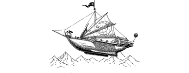

1
Preparations for the quest take no more than a day to complete. The following morning, shortly before dawn, you and Lord Rimoah leave the Kai Monastery by a secret route which takes you to a clearing deep in the heart of the Fryelund Forest. There awaits the means by which you will travel swiftly to Kaag.
Your journey to the Darklands will be made aboard Guildmaster Banedon’s airship—the Skyrider. This magical craft has borne you on many quests to distant lands, yet never before without your friend and companion at its helm. Now, in his absence, the stewardship of the Skyrider has passed to its bo’sun—Nolrim of Bor.
{kind=link}

‘Welcome aboard, Grand Master,’ says Nolrim, proud to be serving under your command. You clasp his strong hand in friendship and compliment him and the crew for the pristine condition of their craft. There is no doubting that he and his company of dwarves are sorely grieved by the absence of their Captain, yet they have not allowed their anguish to give way to hopelessness or despair. These sturdy warriors are renowned for their formidable fighting spirit and you know they willingly risk their lives to help you rescue Banedon from the minions of darkness.
Soon the frost-laden fir trees are receding beneath the Skyrider’s bow as Nolrim steers a westward course towards the grey, snow-capped peaks of the Durncrag Mountains. You spend the flight inside the captain’s cabin, where you and Lord Rimoah discuss your dangerous mission. The plan is to traverse the Durncrag Range and enter the Darklands under cover of a dust storm which is currently sweeping southwards towards Kaag. A landing will be made ten miles to the northeast of the city-fortress, beyond a ridge of hills that will keep the Skyrider hidden from the eyes of Kaag’s watchful lookouts. From there you are to make your way to the fortress on foot, enter as best you can, locate and rescue Banedon, and then return with him to the Skyrider which will carry you back to the safety of Sommerlund. You will have 48 hours in which to complete your mission. If, after the two days have elapsed, you have not returned, Rimoah will be forced to assume that you and the Guildmaster have perished. The dust storm will not last for more than two days, after which time there is a grave danger that the Skyrider will be spotted and attacked by the Kraan and Zlanbeasts which are known to patrol the skies around Kaag.
In a little under two hours you reach your destination where the weather conditions are atrocious. A fierce, dust-choked wind buffets the craft mercilessly during the final descent and visibility is no more than a dozen yards at best. Yet, despite these terrible conditions, Nolrim brings the Skyrider in for a faultless landing behind the ridge. The moment the keel beds into the soft ground, the crew leap into action with ropes and chains. Nolrim soon enters the cabin to inform you that the craft is secure and, with trepidation, you get ready to set off for Kaag.
‘Godspeed, Lone Wolf,’ says Rimoah, with a smile of encouragement. ‘I shall pray to Kai and Ishir for your safety and success. May their light guide you on your journey into darkness.’
You acknowledge his blessing gratefully before bidding him, and Nolrim, farewell. Then, without looking back, you pull your warm cloak tight about you and set off into the storm.